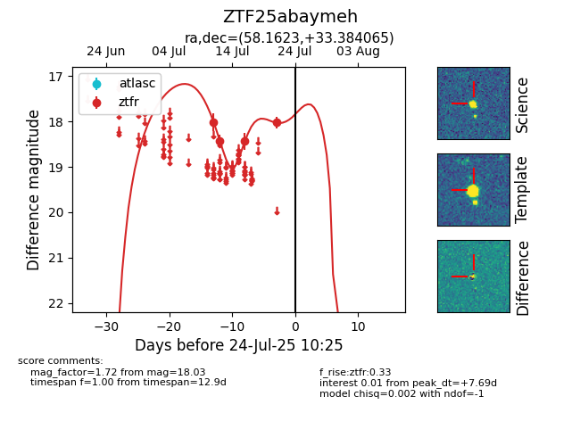

Target ZTF25abaymeh at 2025-07-24 10:25, see:
FINK: fink-portal.org/ZTF25abaymeh
Lasair: lasair-ztf.lsst.ac.uk/objects/ZTF25abaymeh
ALeRCE: alerce.online/object/ZTF25abaymeh
alt names
ZTF25abaymeh (ztf,fink)
coordinates:
equatorial (ra, dec) = (58.1623,+33.38407)
galactic (l, b) = (161.0122,-15.77085)
photometry
last ztfr=18.03
4 ztfr detections
